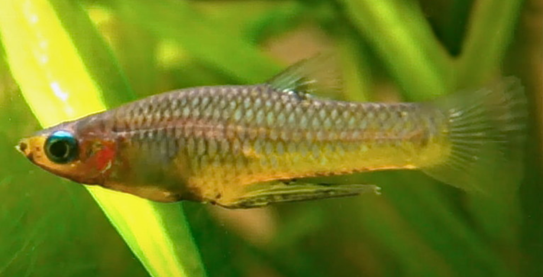

Systématique
- Ordre : Cyprinodontiformes
- Famille : Poeciliidae
- Genre : Girardinus
- Espèce : G. falcatus

Girardinus falcatus est un poisson vivipare endémique de l'île de Cuba, décrit par Eigenmann en 1903. Il est parfois surnommé "Girardin à ventre doré" en raison de la couleur jaunâtre translucide de la partie inférieure de son corps, ce qui le distingue de son cousin plus connu, Girardinus metallicus (qui a des reflets métalliques plus froids).
Il mesure environ 3 à 4 cm pour les mâles et peut atteindre 6 à 7 cm pour les femelles. Son corps est plus haut et moins fuselé que celui du G. metallicus.
La caractéristique la plus impressionnante de cette espèce, et du genre en général, est la longueur démesurée du gonopode chez le mâle, qui est l'un des plus longs proportionnellement à la taille du corps chez les Poeciliidés.
C'est un poisson extrêmement pacifique, grégaire et calme. Il convient parfaitement aux aquariums communautaires peuplés d'espèces de petite taille et non agressives.
Il occupe principalement la zone médiane et supérieure de l'aquarium. Il apprécie les bacs densément plantés avec une eau claire mais stagnante ou à faible courant, reproduisant les marais et étangs de son milieu naturel.
Mode : vivipare.
La fécondation est interne. Après une gestation d'environ 24 à 30 jours, la femelle donne naissance à des alevins vivants et autonomes.
Les portées comptent généralement entre 10 et 40 alevins, selon la taille de la femelle. Bien que les adultes soient moins enclins au cannibalisme que d'autres vivipares (comme les Guppys), il est recommandé de fournir des plantes flottantes pour abriter les jeunes.
Dimorphisme sexuel : Le mâle est beaucoup plus petit que la femelle et possède un gonopode (organe copulateur) très long et pointu, replié vers l'arrière, qui ressemble parfois à une faucille (d'où le nom d'espèce falcatus). La femelle est plus grande et présente une tache de gravidité sombre près de la nageoire anale.
Espérance de vie : 2 à 3 ans.
Il est endémique de Cuba, où il est largement réparti dans les plaines centrales et occidentales. Il habite les eaux stagnantes ou à courant très lent : étangs, marécages, fossés et rivières de plaine. Il vit souvent dans des eaux riches en plantes aquatiques et peut tolérer une eau légèrement saumâtre, bien que cela ne soit pas la norme.
Répartition

Origine naturelle :
- Amérique Centrale (Caraïbes).
- Cuba (Endémique).
- Largement répandu sur l'île (sauf zones très montagneuses).
Paramètres de maintenance
Température : 24 à 28 °C.
pH : 7,0 à 8,0 (eau neutre à basique).
GH : 10 à 30 °dGH (eau dure à très dure impérative).
Volume conseillé : Minimum 60 L pour un groupe. Les femelles étant assez grandes (7 cm), elles nécessitent un peu d'espace de nage.
Régime alimentaire
Régime : omnivore / tendance végétarienne.
Dans la nature, il broute le biofilm, les algues et consomme de petits invertébrés.
En aquarium, il est essentiel de lui fournir une part végétale importante (paillettes à la spiruline, légumes pochés) en plus des proies habituelles (daphnies, artémias).